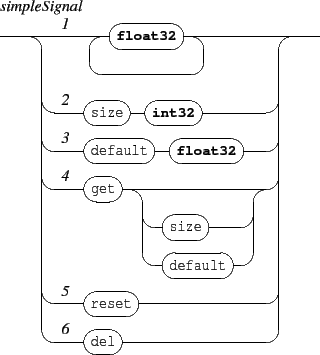
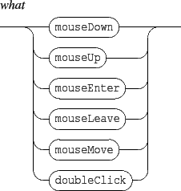

Next: 14.3 The 'self' variable
Up: 14. Events and Interaction
Previous: 14.1 Interaction messages
Contents
Index
14.2 Message variables
Variables denote values computed when an event is triggered. These values are send in place of the variable. A variable name starts with a '$' sign. Currently, the following variables are supported by mouse events:

![\begin{rail}
xy : ('x' \vert 'y') ( \vert '[low,high]')
\end{rail}](img75.gif)
- $x $y: denotes the mouse pointer position at the time of the event. The values are in the range
![$[0,1]$](img76.gif) where 1 is the object size in the x or y dimension. The value is computed according to the object origin: it represents the mouse pointer distance from the object x or y origin (see 4.1.3 p.
where 1 is the object size in the x or y dimension. The value is computed according to the object origin: it represents the mouse pointer distance from the object x or y origin (see 4.1.3 p.![[*]](crossref.gif) ). $x and $y variables support an optional range in the form [low, high] that transforms the values range into the
). $x and $y variables support an optional range in the form [low, high] that transforms the values range into the ![$[low, high]$](img77.gif) range.
range.
- $absx $absy: denotes the mouse pointer absolute position at the time of the event. The values represent a pixel position relative to the top-left point of the target object. Note that this position is unaffected by scale.
Note also that the values are not clipped to the object dimensions and could exceed its width or height or become negative in case of mouse move events.
- $sx $sy: denotes the mouse pointer position in the scene coordinates space. $sx and $sy are computed like
- $date: denotes the object date corresponding to the mouse pointer position at the time of the event. The detailed date variable is given below: it is optionnaly followed by a colon and the name of the mapping to be used to compute the date . The $date variable is replaced by its rational value (i.e. two integers values).

Note that a variable can be used several times in a message, but several $date variables must always refer to the same mapping.
Warning: the interaction message set is provided for experiment. It is likely to change in a future version. Ideas, comments, suggestions are welcome for the design of a stable API.
Next: 14.3 The 'self' variable
Up: 14. Events and Interaction
Previous: 14.1 Interaction messages
Contents
Index
Grame - Interlude project [ANR-08-CORD-010]